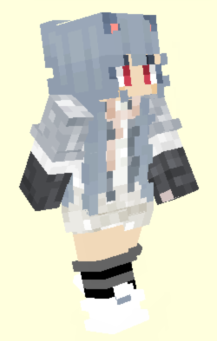

龙王
aka. Lw_Odin, LW, 1461130641
ChiwaInori.top
>
Minecraft
>
Old Players Club
>
龙王

相关信息
♂ MALE
MC ID - Lw_Odin / 17780ce1-2ed3-4249-81fd-e6faf1587044
Bilibili -
174476189
生日 - 2007.4.11 (
)
地区 - 安徽 合肥
身高 - 173 cm (2021)
你知道吗
他在 Puremilk 服务器游玩时因为服务器原因骷髅马没了，所以服主给他的称号是 "马卡没了".